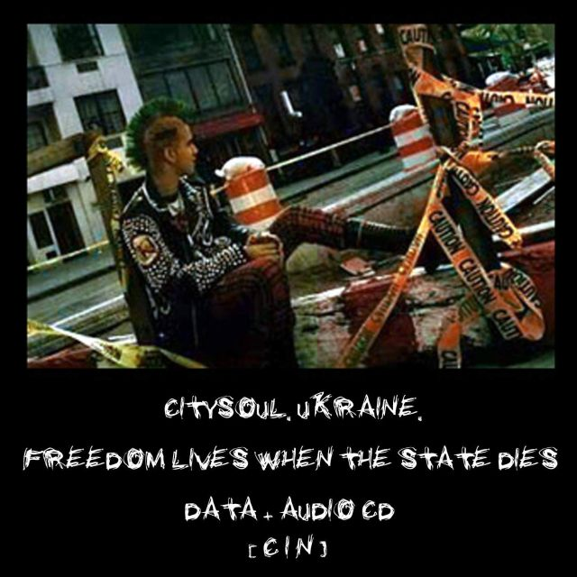

РЖАВАЯ СЕТЬ #4
электронный киберпанк-журнал
Четвертый, и первый в 2005-м году, выпуск езина содержит любопытный, и наверняка
неожиданный материал. К нашей радости, возросла активность аудитории - продолжайте
в этом же духе, не стесняйтесь присылать свои работы!
По некоторым наблюдениям, существует некоторый порог для андерграундных изданий -
3 выпуска. Мы перешагнули этот порог, и теперь Ржавая Сеть уверенно пребывает на
собственном ресурсе.
Проект CitySoul, о котором мы писали во 2м выпуске, развивается: все материалы теперь
доступны в Сети, выпущен диск Freedom Lives When State Dies:

Небольшой комментарий к одному из материалов: ни в коем случае не принимайте "Азбуку
хакера" за технический материал! Этот текст написан (и, что самое странное, издан) совершенно
безграмотным персонажем, и публикуется шутки ради и халявы для =)
Содержание:
Редакционная почта
Cyberpunk iz n0w!
Киберпанк. Всё только начинается. by Electrical Dog
Сетевое Время. Подборка информации by Zany Ross
Оптимизация растровой графики для web by ALiEN Assault
Wetware
Reality Check by ALiEN Assault
Art
NeuroConnector by Asmadeus & Solenoid
Саундтрек на сегодняшнее число, главы 2-3 by Case
Консоль by DS_
PsY Tranc3 by KostaPC
Черный снег by Инга
Одна ночь by Solenoid
Logout by Case
God Mode On! by Zaa
0wn3d
Fuck internet advertising! by ALiEN Assault
Раскрытие защищенного содержимого в iPer e-books by ALiEN Assault
Static TV signal screensaver ripped by [CiN!]
Варфоломей Собейкис. Азбука хакера ripped by [CiN!]
Пока никакой периодичности выхода не определено. Издание будет выходить по мере
поступления материалов, так что читатели могут повлиять на скорость выхода, прислав свои
оригинальные материалы для публикации. Приветствуются любые материалы, имеющие отношение
к киберкультуре - статьи, арт, программы и т.д. Ограничения:
01: Материалы должны быть оригинальными;
02: НЕ принимаются материалы об играх, либо абстрактные рассуждения и манифесты, отражающие
чьё-то субъективное мнение о киберпанк-культуре;
03: Общий объём выпуска не будет превышать 1 мБ. Так что крупномасштабные творения вроде
музыки в MP3/OGG, к сожалению, публиковать возможности не будет;
04: Редакция оставляет за собой возможность правки материалов (коррекции ошибок, опечаток и т.д.)
Из редакционной почты:
From: jimmyhendrix@*.*
Спасибо за прекрасный журнал Ржавая сеть. Очень хорошо что появился
такой журнал в русском сегменте Сети. Высылаю вам рассказ моей
знакомой, возможно вы его опубликуете в следующем номере журнала, если
конечно сочтете это нужным. Знакомую зовут Инга и она живет в
Нью-Йорке. В Манхэттене. Очень любит киберпанк. Неоднократно была на
выступлениях в универсистетах Стерлинга и даже имеет его автограф. В
то сентябрьское утро 2001 года, когда врезался первый боинг в WTC она
находилась прямо под Близнецами. Видела собствеными глазами весь тот
ужас и падение небоскребов. Потом рассказывала мне, как прочитала
Паланика "Бойцовский клуб" и увидела там строки: "В мире, который мне
видится, ты охотишься на лосей в пропитаных влагой лесах, окружающих
руины Рокфелер центра. На тебе одежда из шкур - одна до конца жизни.
Ты взбираешься по лианам на верхушку небоскреба и видишь крошечные
фигурки людей, молотящих зерно и раскладывающих вялиться узкие полосы
кабаньего мяса на протянувшейся на тысячи миль и раскаленной
августовским солнцем заброшеной восьмирядной скоростной
автомагистрали." Она говорит, что эти слова надо нанести на огромный
камень-монумент и поставить его на месте упавших Близнецов. Прошлым
летом я летал к ней в гости и мы ходили на тот котлован. Жуткое
зрелище.. Тот сентябрь наверное уже никогда не уйдет с острова. Печать
трагедии в каждом атоме города. Вобщем высылаю с ее согласия ее текст
и если не затруднит напишите пожалуйста ответ- будете ли вы
публиковать его или нет? и когда выйдет следующий номер?
Вам спасибо =) Как можно видеть, номер уже вышел и рассказ опубликован.
Он наверняка не впишется в представление многих о киберпанк-литературе,
тем не менее текст отличный, и не опубликовать его было бы ошибкой.
Сyberpunk iz n0w!
Издано CiN! 2К5
e-mail: cyb3rz3n@narod.ru
www: http://cyberlib.narod.ru
IRC: #jama @ RusNet
{kind=link}
{kind=link}